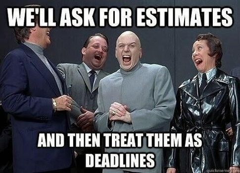
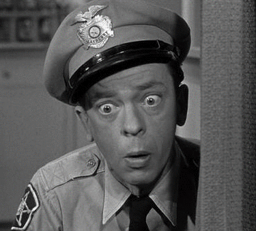
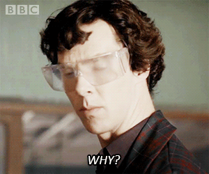
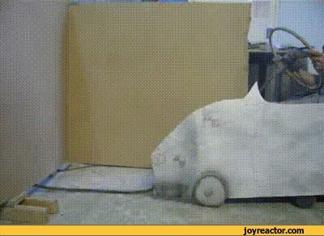
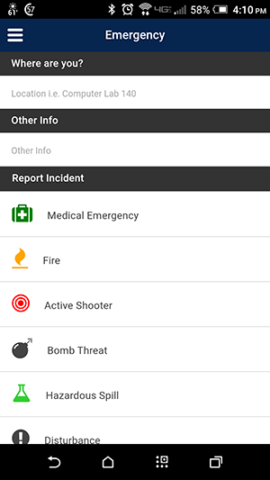
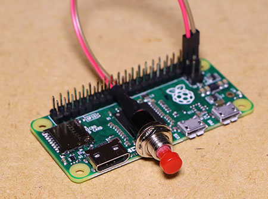
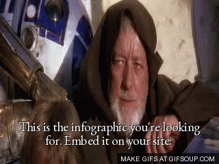

Don't Panic!
Building a Campus Emergency Alert System
Chattanooga State Community College
Presented at THEITS 2017
Bill Crum
Director, Web Application Technology

bill.crum@chattanoogastate.edu
(423) 697-2639
http://tiny.cc/panicfcf (slides)
Overview
- Overview of Project
- Project History & Development
- Technical Stuff
- Present Application
- Application Overview & Operation
- Lessons Learned
- Future Development
- Questions/Comments
Increasing Campus Safety Issues
"1 Dead, 6 wounded in shootings near Illinois university campus"
Increasing Campus Safety Issues
"Oregon shooting: Gunman dead after college rampage"
Increasing Campus Safety Issues
"2015 - Chattanooga Shooting: 4 Marines Killed"
Existing Technology
- Rave Alerts for pushing alerts to students
- Emergency phones in classrooms
- Old Technology
- Okay for medical emergencies, not so good for keeping things low-key
- Cell Phone
- Again, not so good for keeping things low-key
"Panic App" Purpose
Provide unobtrusive way for Faculty/Staff to communicate with Campus Security in the event of an emergency.
Project History & Development
Project Inception
Continued Development and Improvements
Testing
- Performed Summer 2016
- Tests were performed at various locations across campus
Testing
Tip: Make sure you communicate with campus police prior to testing!!!
Testing Results
- "Live" tests with Campus Police - 2 minutes average response time.
Launch
- November 2016
- Deployed to client workstations via KACE system
- Information/education campaign leading up to launch
- Created online user training
- Deployed to client workstations via KACE system.
Technical Stuff!

Technologies/Tools Used
Why these technologies?

Why QT/C++?
- Cross-platform: can compile for Windows, Apple, Linux
- I wanted to learn C++
Why Drupal/NodeJS/Socket.io?
- Drupal: Familiar with Drupal development/PHP
- Drupal: Great user experience for customer
- NodeJS: Needed an asynchronous event runtime that could communicate with my application
- NodeJS: Wanted to learn NodeJS
- Socket.io: Made bidirectional communication infinitely more simple to write
Shameless Plug for Drupal Camp Chattanooga
Chattanooga State Community College
November 4, 2017
https://drupalcampchattanooga.com/
Desktop Application
- Built with Qt/C++
- Gets information from logged in user/Active Directory
- Sends alert to web backend (Drupal) using REST call
Web Backend
- Built in Drupal
- Acts as dispatch monitor
- When alert is received, handles sending of messages to campus police
- Once running, will alert the dispatcher audibly and visually with a popup message (NodeJS, Socket.io)
- Emergency Backend
Application Overview and Operation
Basic Operation
- Open the application by double-clicking Emergency Desktop Icon
- User clicks one of the presets, then clicks the "Send Alert" button.
Campus Security Response
- Campus security alerted via text message to security mobile phones.
- Dispatcher notified via Web interface with audible warning and emergency details.
- Security deployed to reported location.
Lessons Learned
Our Campus Police Rock!
Communication is Key
- Even with lots of communication, there was a little confusion
- Excerpt of alert received: "This is just a notification to please make note that my office is now located in room HSC 1058 ( you had 1059 above)"
Test, Test, and Test Again
Limitations
- Works well in situations where students can't see screen
- Still difficult to use in a lab situation where instructor workstations are projecting to a screen
Future Development
Under development: Mobile application
Concept
- Hardware panic button for instructor workstations (Raspberry Pi Zero that communicates with web backend)
Results
Show me the money!
- I don't have a fancy infographic, but our police chief tells me that we saved approximately $15K from his budget
Fortunately have not had to utilize this application
- Faculty/staff have indicated that they feel safer having access to tool
1 mile from Chattanooga State!!!